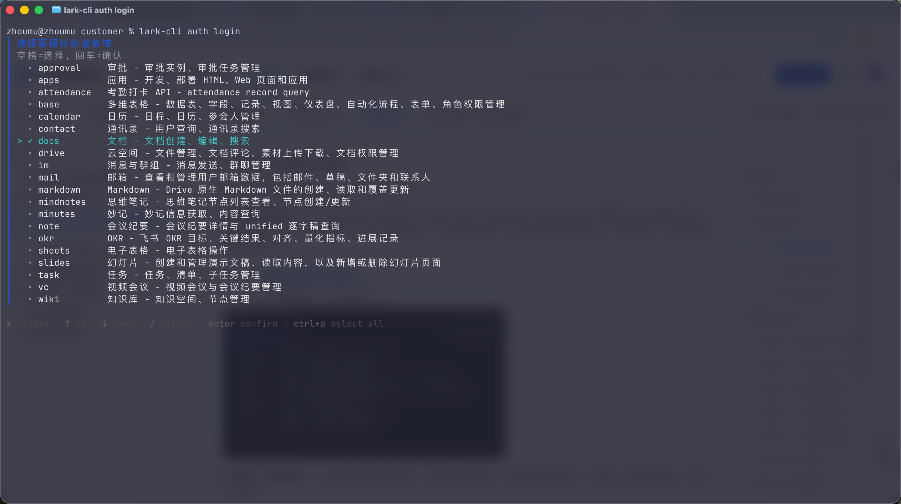
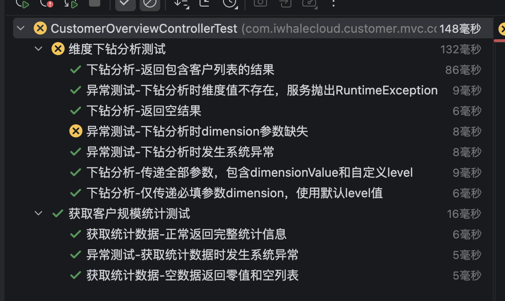

📖 引言
在使用AI Agent的软件开发中，文档编写和单元测试是两个至关重要但往往被忽视的环节。 传统方式下，这两个步骤耗时耗力，且质量难以保证。
通过 Codex 和定制化 Skill，我们可以将这两个环节自动化， 实现编码前的系统分析文档生成和编码后的单元测试生成， 大幅提升开发效率和代码质量。
🔄 AI Agent 辅助开发闭环
🎯 核心理念
系统分析文档生成
在编码开始前，自动生成符合企业标准的系统分析文档，包括架构图、流程图、数据库设计、接口定义等。
核心价值：确保设计完整、规范统一、节省时间
单元测试生成
在编码完成后，自动生成全面的单元测试，覆盖所有分支路径，包括正常流程和异常处理。
核心价值：保证质量、全分支覆盖、快速反馈
⚡ 两大核心 SKILL
system-analysis-doc
用途：生成系统分析文档
阶段：编码前
- 9 个标准章节结构
- 自动生成 Mermaid 图表
- 数据库表详细设计
- RESTful API 接口定义
- 测试用例规划
- 一键生成飞书云文档
java-unit-test-generation
用途：生成 Java 单元测试
阶段：编码后
- 双层测试架构（Controller + Service）
- 全分支覆盖（每个 if 分支独立测试）
- 异常测试清晰标注
- Mock 策略和 ArgumentCaptor
- @Nested 分组组织
- MyBatis-Plus 分页支持
🚀 使用流程
编码前：系统分析文档生成
1安装飞书 CLI 工具
配置 lark-cli 并完成认证授权
📎 飞书 CLI 工具官网地址：https://open.feishu.cn/document/mcp_open_tools/feishu-cli-let-ai-actually-do-your-work-in-feishu

lark-cli auth login 后，选择需要授权的业务域（勾选 docs）2确认 SKILL 可用
检查 .claude/skills/ 目录下的 system-analysis-doc
3发起对话
使用 system-analysis-doc 这个 SKILL 和飞书的 MCP，为这个系统按照格式要求生成系统分析文档的飞书云文档。

4AI 自动处理
分析项目 → 提取架构 → 生成图表 → 创建文档
编码后：单元测试生成
1确认 SKILL 可用
检查 .claude/skills/ 目录下的 java-unit-test-generation
2发起对话
请为 CustomerController 和 CustomerServiceImpl 生成单元测试，要求全分支覆盖。
3AI 自动处理
分析代码 → 识别分支 → 生成测试用例 → 组织测试类

java-unit-test-generation 后，生成的测试用例4获取测试文件
直接生成 CustomerControllerTest.java 和 CustomerServiceImplTest.java
5运行测试
mvn test -Dtest=CustomerControllerTest,CustomerServiceImplTest
📝 实际案例
案例：CMI要客运营平台-客户管理模块
编码前：系统分析文档
- 生成了完整的 9 章节系统分析文档
- 包含 4 个飞书画板（架构图、2 个流程图、ER 图）
- 定义了 11 张数据库表的详细设计
- 规范了 51 个 RESTful API 接口
- 规划了 16 个测试用例
- 耗时：5 分钟（传统方式 4-8 小时）
编码后：单元测试
- 生成了 CustomerControllerTest.java（13 个测试用例）
- 生成了 CustomerServiceImplTest.java（24 个测试用例）
- 实现了 100% 分支覆盖率
- 所有异常测试都清晰标注"异常测试-"前缀
- 使用 @Nested 按方法分组，结构清晰
- 耗时：3 分钟（传统方式 2-4 小时）
总体效果
文档链接
飞书云文档： CMI 要客运营平台-客户管理模块系统分析文档
📋 系统分析文档结构详解
system-analysis-doc SKILL 定义了标准的 9 个章节，确保文档格式统一、内容完整：
一、项目背景
说明项目的业务背景和起因
- 业务增长需求
- 现有系统痛点
- 新业务场景挑战
二、当前现状
描述当前系统的现状和问题
- 人工操作依赖
- 系统性能瓶颈
- 数据一致性问题
三、开发目标
明确业务目标和技术目标
- 业务目标：流程自动化、用户体验提升、成本降低
- 技术目标：技术栈升级、性能优化、架构改进
四、系统架构图
使用飞书画板（whiteboard）展示
- 系统模块划分
- 模块间调用关系
- 技术栈选型
- 部署架构
五、业务流程图/时序图
展示业务流转过程或系统交互时序
- 流程图（flowchart）
- 时序图（sequenceDiagram）
- 泳道图
六、数据库改造
详细的数据库设计
- 6-1. ER图：表结构和关联关系
- 6-2. 详细设计：字段名、类型、说明、约束
七、前后端联调接口
完整的 RESTful API 定义
- 接口地址和请求方法
- 请求参数（类型、必填、默认值、说明）
- 响应数据结构
- 业务说明
八、测试用例
核心功能的测试用例规划
- 用例编号
- 测试场景
- 前置条件
- 测试步骤
- 预期结果
九、部署说明
部署步骤和异常处理
- 9-1. 升级说明：数据库脚本、配置修改、代码部署
- 9-2. 异常说明：回滚方案、应急处理
🧪 单元测试架构详解
双层测试架构
java-unit-test-generation SKILL 采用双层测试架构，确保测试的全面性：
🎯 第一层：Controller 测试
框架：@WebMvcTest + MockMvc
- 测试请求路由
- 测试参数绑定
- 测试校验逻辑
- 测试响应结构
- 测试异常处理
- Mock Service 层
@WebMvcTest(MyController.class)
@Import(GlobalExceptionHandler.class)
class MyControllerTest {
@Autowired
private MockMvc mockMvc;
@MockitoBean
private MyService myService;
@Test
void methodName_success() {
when(myService.method(any()))
.thenReturn(result);
mockMvc.perform(get("/api/..."))
.andExpect(status().isOk());
}
}
🎯 第二层：Service 测试
框架：@ExtendWith(MockitoExtension)
- 测试所有业务逻辑
- 测试分支路径
- 测试异常处理
- Mock Mapper 层
- 验证数据操作
- 全分支覆盖
@ExtendWith(MockitoExtension.class)
class MyServiceImplTest {
@InjectMocks
private MyServiceImpl service;
@Mock
private MyMapper mapper;
@Test
void method_success() {
when(mapper.selectById(1L))
.thenReturn(entity);
Result result = service.method(1L);
assertNotNull(result);
}
}
🔑 关键特性
✅ 全分支覆盖
每个 if 分支都有独立测试用例，确保 100% 覆盖率
🎯 异常测试标注
所有异常测试用"异常测试-"前缀清晰标注
📦 @Nested 分组
按方法分组测试，结构清晰，便于维护
🔧 ArgumentCaptor
验证写操作传入的参数是否正确
❓ 常见问题
两个 SKILL 可以同时使用吗？
生成的测试代码需要手动调整吗？
如果项目不是 Spring Boot 怎么办？
如何自定义文档模板？
飞书文档创建失败怎么办？
🎉 总结
通过 AI Agent 和定制化 Skill，我们实现了开发全生命周期的自动化支持：
- 编码前：system-analysis-doc 自动生成系统分析文档，确保设计完整规范
- 编码后：java-unit-test-generation 自动生成单元测试，保证代码质量
- 效率提升：从传统方式的 12+ 小时缩短到 8 分钟，效率提升 99%
- 质量保证：100% 格式标准化 + 100% 分支覆盖率
- 知识沉淀：文档和测试都符合企业标准，便于团队协作
立即开始使用，让 AI 成为你的开发助手！